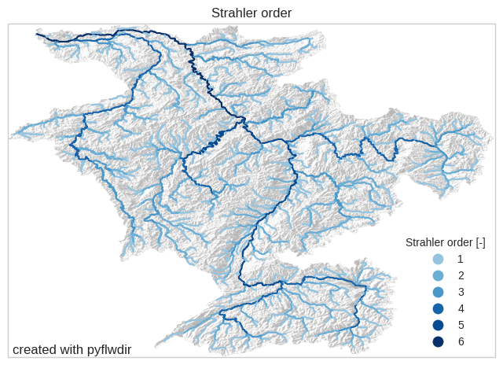
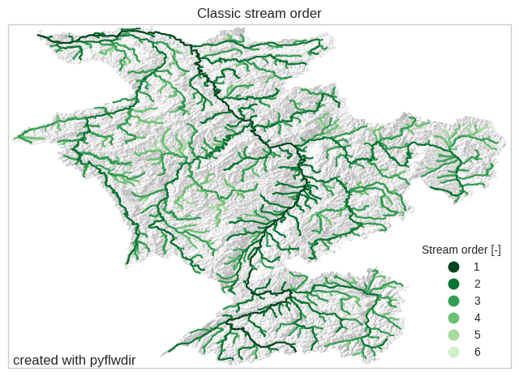

Tip
For an interactive online version click here:

Stream order#
Here we assume that flow directions are known. We read the flow direction raster data, including meta-data, using rasterio and parse it to a pyflwdir FlwDirRaster object, see earlier examples for more background.
[1]:
# import pyflwdir, some dependencies and convenience methods
import geopandas as gpd
import numpy as np
import rasterio
import pyflwdir
# local convenience methods (see utils.py script in notebooks folder)
from utils import quickplot, colors, cm # data specific quick plot method
# read and parse data
with rasterio.open("rhine_d8.tif", "r") as src:
flwdir = src.read(1)
crs = src.crs
flw = pyflwdir.from_array(
flwdir,
ftype="d8",
transform=src.transform,
latlon=crs.is_geographic,
cache=True,
)
Strahler stream order#
In the strahler “top down” stream order map, rivers of the first order are the most upstream tributaries or head water cells. If two streams of the same order merge, the resulting stream has an order of one higher. If two rivers with different stream orders merge, the resulting stream is given the maximum of the two order.
[2]:
# first define streams based on an upstream area threshold, here 100 km2
stream_mask = flw.upstream_area("km2") > 100
[3]:
# calculate the stream orders for these streams
strahler = flw.stream_order(type="strahler", mask=stream_mask)
[4]:
# vectorize stream order for plotting
feats = flw.streams(stream_mask, strord=strahler)
gdf = gpd.GeoDataFrame.from_features(feats, crs=crs)
gdf.to_file("rhine_strahler.geojson", driver="GeoJSON")
[5]:
# properties passed to the GeoDataFrame.plot method
gpd_plot_kwds = dict(
column="strord",
cmap=colors.ListedColormap(cm.Blues(np.linspace(0.4, 1, 7))),
legend=True,
categorical=True,
legend_kwds=dict(loc="lower right", title="Strahler order [-]"),
)
# plot streams with hillshade from elevation data (see utils.py)
ax = quickplot(
gdfs=[(gdf, gpd_plot_kwds)], title="Strahler order", filename="flw_strord_strahler"
)

Classic stream order#
In the classic “bottum up” stream order map, the main river stem has order 1. Each tributary is given a number one greater than that of the river or stream into which they discharge.
[6]:
strord = flw.stream_order(type="classic", mask=stream_mask)
[7]:
# vectorize stream order for plotting purposes
feats1 = flw.streams(stream_mask, strord=strord)
gdf1 = gpd.GeoDataFrame.from_features(feats1, crs=crs)
[8]:
# properties passed to the GeoDataFrame.plot method
gpd_plot_kwds = dict(
column="strord",
cmap=colors.ListedColormap(cm.Greens_r(np.linspace(0, 0.8, 6))),
legend=True,
categorical=True,
legend_kwds=dict(loc="lower right", title="Stream order [-]"),
)
# plot streams with hillshade from elevation data (see utils.py)
ax = quickplot(
gdfs=[(gdf1, gpd_plot_kwds)],
title="Classic stream order",
filename="flw_strord_classic",
)
